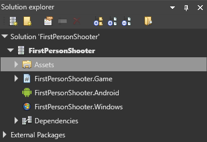

ゲームの設定
初級 プログラマー デザイナー
ゲームのグローバルな設定は、Game Settings アセットで構成できます。既定では、Game Settings アセットはプロジェクトの［Assets］フォルダーに格納されます。
ゲームの設定を編集する
［Solution explorer］(既定では左下のペイン) で、［Assets］フォルダーを選択します。

［Asset view］(既定では下部のペイン) で、［Game Settings］アセットを選択します。

［Property grid］(既定では右側のペイン) で、［Game Settings］のプロパティを編集します。

既定のシーン
プロジェクトには複数のシーンを作成できます。既定のシーン は、Stride が実行時にロードするシーンです。
既定のシーンを設定するには:
［Game Settings］のプロパティで、［Default Scene］の隣の
 (［Select an asset］) をクリックします。
(［Select an asset］) をクリックします。
［Select an asset］ウィンドウが開きます。
既定のシーンを選択し、［OK］をクリックします。
シーンの詳細については、「シーンを管理する」を参照してください。
Graphics Compositor
プロジェクトでは複数の Graphics Compositor を使用できますが、一度に使用できるのは 1 つだけです。
Graphics Compositor を設定するには:
［Game Settings］のプロパティで、［Graphics Compositor］の隣の
(［Select an asset］) をクリックします。
［Select an asset］ウィンドウが開きます。
［Graphics Compositor］を選択して、［OK］をクリックします。
詳細については、「Graphics Compositor」を参照してください。
スプラッシュ画面
スプラッシュ画面 とは、ゲームの開始時に表示される画面です。既定は Stride のスプラッシュ画面です。
Note
Splash Screen は、ゲームがリリース モードでビルドされている場合にのみ表示されます。

| プロパティ | 説明 |
|---|---|
| Texture | スプラッシュ画面として表示される画像 (会社のロゴなど) です。既定値は StrideDefaultSplashScreen です。 |
| Color | スプラッシュ画面がフェードインする色です。既定値は黒 (#FF000000) です。 |
詳細については、「スプラッシュ画面」を参照してください。
レンダリングの設定

| プロパティ | 説明 |
|---|---|
| Default Back Buffer Width | デバイスの比率および解像度によっては、オーバーライドされている場合があります。Windows では、これはウィンドウのサイズです。Android/iOS では、これはオフスクリーン ターゲットの解像度です。 |
| Default Back Buffer Height | デバイスの比率および解像度によっては、オーバーライドされている場合があります。Windows では、これはウィンドウのサイズです。Android/iOS では、これはオフスクリーン ターゲットの解像度です。 |
| Adapt Back Buffer To Screen | 画面の比率に合わせてバック バッファーの比率を調整します。 |
| Default Graphics Profile | プロジェクトで必要なグラフィックス機能レベルです。 |
| Color Space | レンダリングに使用される色空間 (ガンマまたはリニア) です。この設定は、実行時のゲーム、および Game Studio での要素の表示方法に影響します。 |
| Display Orientation | ゲームの表示の向きです (既定、縦、左横、右横)。 |
| Target graphics platform | プロジェクトのビルド対象のターゲット プラットフォームです。これを［Default］に設定すると、最も適切なプラットフォームが選択されます。詳細については、「グラフィックス プラットフォームを変更する」を参照してください。 |
Tip
プロジェクトが使用している既定のプラットフォームを確認するには、コード (スクリプト内など) にブレーク ポイントを追加し、プロジェクトを実行して、GraphicsDevice.Platform 変数の値を調べます。
エディターの設定
エディターの設定は、シーン エディターでのエンティティの表示方法を制御します。実行時のゲームには影響ありません。
Note
Game Studio によるエンティティの表示方法は、［Rendering settings］の［Color space］の設定によっても影響を受けます。

| プロパティ | 説明 |
|---|---|
| Rendering mode | サムネイルおよびアセット プレビューのレンダリング方法です。 |
| Animation Frame Rate | Game Studio で表示されるアニメーションのフレーム レートです。アニメーション データには影響ありません。 |
テクスチャの設定

| プロパティ | 説明 |
|---|---|
| Texture Quality | テクスチャをエンコードするときのテクスチャの品質です。［Fast］は CPU の使用量は最小ですが、品質は最低です。品質を高くすると、ターゲット プラットフォームによってはビルドが遅くなる場合があります。 |
物理特性の設定
| プロパティ | 説明 |
|---|---|
| Flags | ［CollisionsOnly］は、衝突を除く物理特性を無効にします。たとえば、このオプションを有効にすると、オブジェクトは重力によっては動きませんが、手動で動かした場合はやはり衝突します。［ContinuousCollisionDetection］は、高速で移動するエンティティが誤って他のエンティティを通り抜けないようにします。NOTE: ここで示されている他のフラグは、現在、Stride では有効ではありません。 |
| Max Sub Steps | 物理特性エンジンが速度低下を補償するために 1 フレームで実行できるシミュレーションの最大回数です。 |
| Fixed Time Step | 物理特性シミュレーション フレームの長さ (秒単位) です。既定値は 0.016667 です (1 秒の 60 分の 1)。 |
オーディオの設定

| プロパティ | 説明 |
|---|---|
| HRTF Support | HRTF オーディオを有効にします。HRTF が有効になっているオーディオ エミッターだけが HRTF オーディオを生成することに注意してください。詳細については、「HRTF」を参照してください。 |
オーディオの詳細については、「オーディオ」を参照してください。
ナビゲーションの設定

動的ナビゲーション メッシュのプロパティ
| プロパティ | 説明 |
|---|---|
| Enabled | ナビゲーション メッシュが割り当てられていないナビゲーション コンポーネントで動的ナビゲーションを有効にします。 |
| Included collision groups | 動的に生成されるナビゲーション メッシュが使用する衝突グループを設定します。既定では、メッシュはすべての衝突グループを使用します。 |
| Build settings | 動的に生成されるナビゲーション メッシュの高度な設定です。 |
詳細については、「動的ナビゲーション」を参照してください。
ナビゲーション グループのプロパティ
| プロパティ | 説明 |
|---|---|
| Item | グループの名前です。 |
| Height | このグループ内のエンティティの高さです。エンティティは、天井がこの値より低いエリアには入ることができません。 |
| Maximum climb height | このグループのエンティティが登ることのできる最大の高さです。 |
| Maximum slope | このグループのエンティティが登ることのできる最大の斜度 (度単位) です。エンティティは、この値より急なスロープを登り降りできません。 |
| Radius | この値が大きいほど、エンティティが使用するナビゲーション メッシュの面積が大きくなります。エンティティは Radius の 2 倍より小さいギャップを通り抜けることはできません。 |
詳細については、「ナビゲーション」を参照してください。
オーバーライド
特定のプラットフォーム、グラフィックス、API などについて、設定をオーバーライドできます。たとえば、プラットフォームごとにテクスチャの品質を変えることができます。
［GameSettings］アセットを選択し、［Property grid］の［Overrides］で
 (［Add a new item to the list］) をクリックします。
(［Add a new item to the list］) をクリックします。
オーバーライドが追加されます。
新しいオーバーライドの［Platforms］で、オーバーライドを適用するプラットフォームを選択します。必要なだけいくつでも選択できます。

オプション: このオーバーライドを特定の GPU プラットフォームに対してのみ適用するには、［Specific Filter］ドロップダウン リストから選択します。

［Platform Filters］(後の「プラットフォーム フィルターを追加する」を参照) で、このリストに GPU プラットフォームを追加できます。
［Configuration］ドロップダウン メニューで、オーバーライドする設定の種類を選択します (［Editor Settings］、［Texture Settings］、［Rendering Settings］、[Physics Settings］)。

オーバーライドするオプションを設定します。
プラットフォーム フィルターを追加する
オーバーライドを設定するときの特定のプラットフォーム フィルターとして、［Platform Filters］で項目を選択できます (前記の説明を参照)。
［Game Settings］アセットを選択し、［Property grid］で［Platform Filters］を展開します。
使用できるプラットフォーム フィルターのリストが表示されます。
リストの下部で、［Add to Platform Filters］をクリックします。
新しい空の項目が追加されます。
項目のフィールドに、追加する GPU フィルターを入力します。
プラットフォーム フィルターを追加した後は、［Overrides］で特定のフィルターとしてそれを選択できます。

Note
新しいフィルターがリストに表示されない場合は、オーバーライドを削除し、再度追加してください。